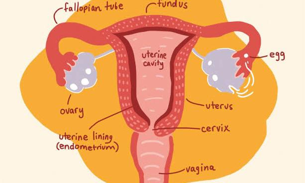
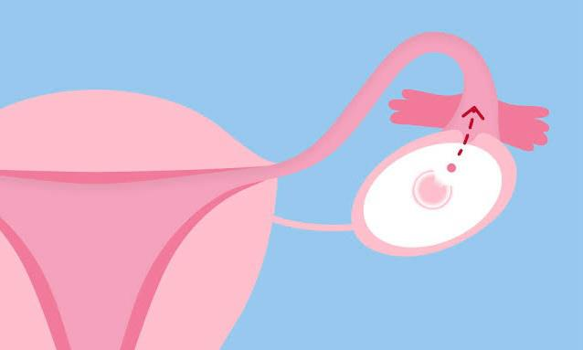

Services
Menstrual-related Medical Problems and Potential Treatment Approaches

Dysmenorrhea (Painful Periods):
- Causes: Primary dysmenorrhea is usually due to natural contractions of the uterus. Secondary dysmenorrhea may be caused by conditions like endometriosis or fibroids.
- Treatment: Over-the-counter pain relievers (NSAIDs), hormonal birth control (to regulate menstrual cycles and reduce pain), lifestyle changes, and in severe cases, surgery for underlying conditions.

Amenorrhea (Absence of Periods):
- Causes: Pregnancy, breastfeeding, hormonal imbalances, stress, extreme weight loss, or structural issues.
- Treatment: Addressing the underlying cause, which may include lifestyle changes, hormone therapy, or surgery depending on the situation.
Menorrhagia (Heavy Periods):
- Causes: Hormonal imbalances, uterine fibroids, adenomyosis, or bleeding disorders.
- Treatment: Medications (such as hormonal contraceptives), intrauterine devices (IUDs), endometrial ablation, or in severe cases, surgery like hysterectomy.
Polycystic Ovary Syndrome (PCOS):
- Causes: Insulin resistance, hormonal imbalances
- Treatment: Lifestyle changes (diet, exercise), hormonal contraceptives, anti-androgen medications, and in some cases, fertility treatments.
Endometriosis:
- Causes: Tissue similar to the uterine lining grows outside the uterus.
- Treatment: Pain management (NSAIDs), hormonal therapies (birth control, GnRH agonists), and in severe cases, surgery to remove endometrial tissue.
Premenstrual Syndrome (PMS) and Premenstrual Dysphoric Disorder (PMDD):
- Causes: Hormonal fluctuations.
- Treatment: Lifestyle changes (diet, exercise, stress management), medications (antidepressants, hormonal treatments), and cognitive-behavioral therapy (CBT) for PMDD.
Oligomenorrhea:
- Causes: Hormonal imbalances, PCOS, stress.
- Treatment: Addressing the underlying cause, hormonal therapy, and lifestyle changes.
Menstrual Migraines:
- Causes: Hormonal fluctuations.
- Treatment: Preventive medications, acute migraine treatments, and lifestyle modifications.